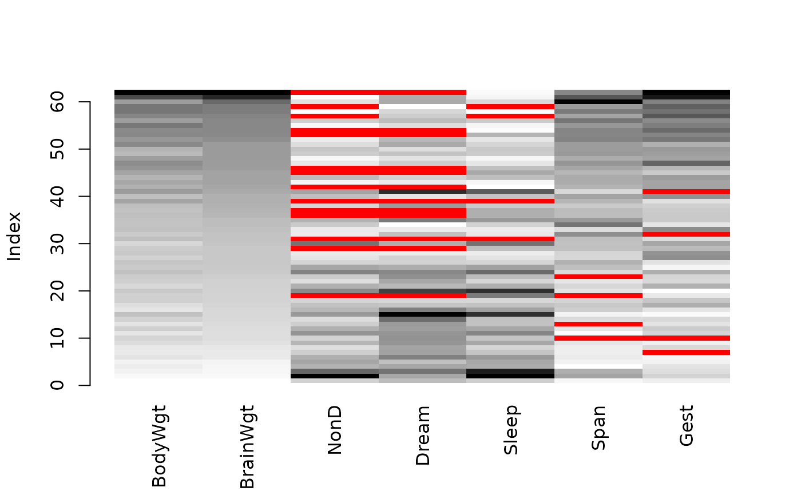
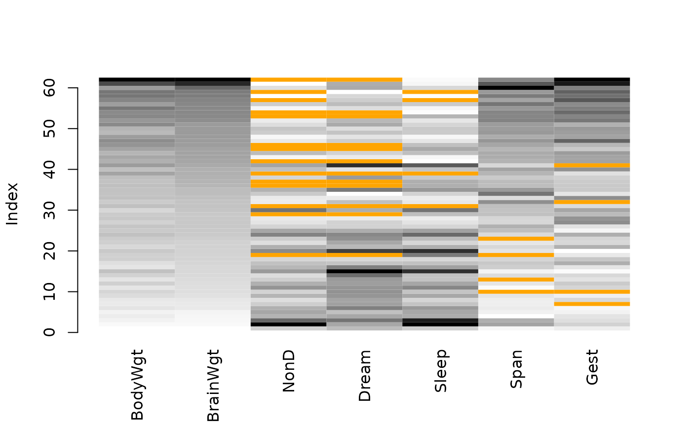

Create a matrix plot, in which all cells of a data matrix are visualized by rectangles. Available data is coded according to a continuous color scheme, while missing/imputed data is visualized by a clearly distinguishable color.
matrixplot(
x,
delimiter = NULL,
sortby = NULL,
col = c("red", "orange"),
fixup = TRUE,
xlim = NULL,
ylim = NULL,
main = NULL,
sub = NULL,
xlab = NULL,
ylab = NULL,
axes = TRUE,
labels = axes,
xpd = NULL,
interactive = TRUE,
...
)a matrix or data.frame.
a character-vector to distinguish between variables and
imputation-indices for imputed variables (therefore, x needs to have
colnames()). If given, it is used to determine the corresponding
imputation-index for any imputed variable (a logical-vector indicating which
values of the variable have been imputed). If such imputation-indices are
found, they are used for highlighting and the colors are adjusted according
to the given colors for imputed variables (see col).
a numeric or character value specifying the variable to sort
the data matrix by, or NULL to plot without sorting.
the colors to be used in the plot. RGB colors may be specified
as character strings or as objects of class "colorspace::RGB()".
HCL colors need to be specified as objects of class
"colorspace::polarLUV()". If only one color is supplied, it is
used for missing and imputed data and a greyscale is used for available
data. If two colors are supplied, the first is used for missing and the
second for imputed data and a greyscale for available data. If three colors
are supplied, the first is used as end color for the available data, while
the start color is taken to be transparent for RGB or white for HCL.
Missing/imputed data is visualized by the second/third color in this case.
If four colors are supplied, the first is used as start color and the second
as end color for the available data, while the third/fourth color is used
for missing/imputed data.
a logical indicating whether the colors should be corrected to
valid RGB values (see colorspace::hex()).
axis limits.
main and sub title.
axis labels.
a logical indicating whether axes should be drawn on the plot.
either a logical indicating whether labels should be plotted below each column, or a character vector giving the labels.
a logical indicating whether the rectangles should be allowed to
go outside the plot region. If NULL, it defaults to TRUE
unless axis limits are specified.
a logical indicating whether a variable to be used for sorting can be selected interactively (see ‘Details’).
for matrixplot and iimagMiss, further graphical
parameters to be passed to graphics::plot.window(),
graphics::title() and graphics::axis(). For
TKRmatrixplot, further arguments to be passed to matrixplot.
In a matrix plot, all cells of a data matrix are visualized by
rectangles. Available data is coded according to a continuous color scheme.
To compute the colors via interpolation, the variables are first scaled to
the interval between 0 and 1. Missing/imputed values can then be
visualized by a clearly distinguishable color. It is thereby possible to use
colors in the HCL or RGB color space. A simple way of
visualizing the magnitude of the available data is to apply a greyscale,
which has the advantage that missing/imputed values can easily be
distinguished by using a color such as red/orange. Note that -Inf
and Inf are always assigned the begin and end color, respectively, of
the continuous color scheme.
Additionally, the observations can be sorted by the magnitude of a selected
variable. If interactive is TRUE, clicking in a column
redraws the plot with observations sorted by the corresponding variable.
Clicking anywhere outside the plot region quits the interactive session.
This is a much more powerful extension to the function imagmiss
in the former CRAN package dprep.
iimagMiss is deprecated and may be omitted in future versions of
VIM. Use matrixplot instead.
M. Templ, A. Alfons, P. Filzmoser (2012) Exploring incomplete data using visualization tools. Journal of Advances in Data Analysis and Classification, Online first. DOI: 10.1007/s11634-011-0102-y.
Other plotting functions:
aggr(),
barMiss(),
histMiss(),
marginmatrix(),
marginplot(),
mosaicMiss(),
pairsVIM(),
parcoordMiss(),
pbox(),
scattJitt(),
scattMiss(),
scattmatrixMiss(),
spineMiss()
data(sleep, package = "VIM")
## for missing values
x <- sleep[, -(8:10)]
x[,c(1,2,4,6,7)] <- log10(x[,c(1,2,4,6,7)])
matrixplot(x, sortby = "BrainWgt")
#> Warning: variable 'Dream' contains infinite values

## for imputed values
x_imp <- kNN(sleep[, -(8:10)])
x_imp[,c(1,2,4,6,7)] <- log10(x_imp[,c(1,2,4,6,7)])
matrixplot(x_imp, delimiter = "_imp", sortby = "BrainWgt")
#> Warning: variable 'Dream' contains infinite values
